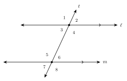
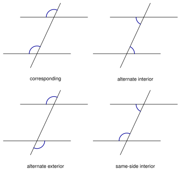
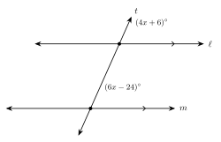
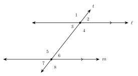
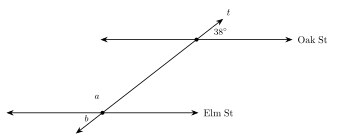

1.4 - Parallel Lines and Transversals
Look at the stripes in a parking lot. They run side by side and never meet. Now look at the line along the edge of the lot. It crosses every stripe.

When one line crosses two others, it makes eight angles. If the two lines are parallel, these angles follow a pattern. In this lesson you learn the pattern and use it to find missing angles.
parallel, perpendicular, skew, transversal, corresponding angles, alternate interior angles, alternate exterior angles, same-side interior angles
Printable Guided Notes for this lesson (fill-in notes to print and write on)
🔥 Warm Up
Two angles are a linear pair. One measures \(65^\circ\). Find the other.
Solve \(4x + 6 = 6x - 24\).
Solve \((3x - 5) + (2x + 20) = 180\).
👥 Learn Together
1.4.1 - Parallel, Perpendicular, and Skew Lines
Parallel lines are in the same plane and never meet. We write \(\ell \parallel m\). Matching arrows on a figure show that lines are parallel.
Perpendicular lines cross to make right angles. We write \(p \perp q\). A small square shows the right angle.
Skew lines are in space, not in one plane. They do not meet, and they are not parallel. A box shows them well.
Example 1: Lines on a box
Each edge of the box is part of a line.
Name an edge parallel to \(\overline{AB}\).
\(\overline{DC}\). (Also \(\overline{EF}\) and \(\overline{HG}\).) They go in the same direction and never meet.
Name an edge perpendicular to \(\overline{AB}\).
\(\overline{AD}\). (Also \(\overline{BC}\).) They meet at a right angle.
Name an edge skew to \(\overline{AB}\).
\(\overline{CG}\). It does not meet \(\overline{AB}\), and it does not go in the same direction.
Name an edge parallel to \(\overline{AD}\).
Name an edge skew to \(\overline{BC}\).
\(\overline{BC}\). (Also \(\overline{EH}\) and \(\overline{FG}\).)
\(\overline{AE}\). (Also \(\overline{DH}\), \(\overline{EF}\), and \(\overline{HG}\).)
On the coordinate plane. On a grid, two lines are parallel when they go up and over by the same amount. They have the same slope.
Example 2: Parallel on a grid

Are \(\overleftrightarrow{AB}\) and \(\overleftrightarrow{CD}\) parallel? \(A(1, 1)\), \(B(5, 3)\), \(C(1, 4)\), \(D(5, 6)\).
Slope of \(\overleftrightarrow{AB}\): \(\dfrac{3 - 1}{5 - 1} = \dfrac{2}{4} = \dfrac{1}{2}\).
Slope of \(\overleftrightarrow{CD}\): \(\dfrac{6 - 4}{5 - 1} = \dfrac{2}{4} = \dfrac{1}{2}\).
The slopes are equal, so the lines are parallel.
\(J(0, 2)\), \(K(4, 4)\), \(L(1, 0)\), \(M(4, 3)\). Are \(\overleftrightarrow{JK}\) and \(\overleftrightarrow{LM}\) parallel?
Slope of \(\overleftrightarrow{JK}\) is \(\frac{2}{4} = \frac{1}{2}\). Slope of \(\overleftrightarrow{LM}\) is \(\frac{3}{3} = 1\). The slopes are different, so the lines are not parallel.
1.4.2 - Angles Made by a Transversal
A transversal is a line that crosses two or more other lines. In the figure, line \(t\) is a transversal of lines \(\ell\) and \(m\). It makes eight angles.
Angles between \(\ell\) and \(m\) are interior. Angles outside are exterior. These are the four kinds of pairs.

| Pair | Where they are | Example |
|---|---|---|
| corresponding | same position at each crossing | \(\angle 1\) and \(\angle 5\) |
| alternate interior | between the lines, opposite sides of \(t\) | \(\angle 3\) and \(\angle 6\) |
| alternate exterior | outside the lines, opposite sides of \(t\) | \(\angle 1\) and \(\angle 8\) |
| same-side interior | between the lines, same side of \(t\) | \(\angle 3\) and \(\angle 5\) |
Example 3: Name the pair
Use the figure above.
\(\angle 2\) and \(\angle 6\): both are in the upper right position. They are corresponding.
\(\angle 4\) and \(\angle 6\): both are between the lines, on the right side of \(t\). They are same-side interior.
\(\angle 2\) and \(\angle 7\)
\(\angle 3\) and \(\angle 7\)
\(\angle 4\) and \(\angle 5\)
alternate exterior
corresponding
alternate interior
1.4.3 - Parallel Lines and the Eight Angles
If \(\ell \parallel m\), then:
- corresponding angles are equal
- alternate interior angles are equal
- alternate exterior angles are equal
- same-side interior angles are supplementary (they add to \(180^\circ\))
Example 4: Find all eight angles
\(\ell \parallel m\) in the figure above, and \(m\angle 1 = 115^\circ\). Find the other seven angles.
| Angle | Measure | Reason |
|---|---|---|
| \(\angle 2\) | \(65^\circ\) | linear pair with \(\angle 1\) |
| \(\angle 3\) | \(65^\circ\) | vertical to \(\angle 2\) |
| \(\angle 4\) | \(115^\circ\) | vertical to \(\angle 1\) |
| \(\angle 5\) | \(115^\circ\) | corresponding to \(\angle 1\) |
| \(\angle 6\) | \(65^\circ\) | corresponding to \(\angle 2\) |
| \(\angle 7\) | \(65^\circ\) | vertical to \(\angle 6\) |
| \(\angle 8\) | \(115^\circ\) | vertical to \(\angle 5\) |
Every angle is either \(115^\circ\) or \(65^\circ\). The two numbers add to \(180^\circ\).
Two parallel lines are cut by a transversal. One angle is \(48^\circ\). How many of the eight angles measure \(48^\circ\)? What do the others measure?
Four angles measure \(48^\circ\). The other four measure \(180 - 48 = 132^\circ\).
Example 5: Corresponding angles

\(\ell \parallel m\). Find \(x\) and the angles.
The marked angles are corresponding, so they are equal.
\[ 4x + 6 = 6x - 24 \quad\text{so}\quad 30 = 2x \quad\text{so}\quad x = 15 \]
Each angle is \(4(15) + 6 = 66^\circ\). Check: \(6(15) - 24 = 66\).
Example 6: Same-side interior angles

\(\ell \parallel m\). Find \(x\) and the angles.
The marked angles are same-side interior, so they add to \(180^\circ\).
\[ (3x - 5) + (2x + 20) = 180 \quad\text{so}\quad 5x + 15 = 180 \quad\text{so}\quad x = 33 \]
The angles are \(3(33) - 5 = 94^\circ\) and \(2(33) + 20 = 86^\circ\). Check: \(94 + 86 = 180\).
\(\ell \parallel m\).
Alternate interior angles measure \((2x + 25)^\circ\) and \((3x - 5)^\circ\). Find \(x\) and the angles.
Same-side interior angles measure \((4x + 2)^\circ\) and \((2x + 16)^\circ\). Find \(x\) and the angles.
They are equal. \(2x + 25 = 3x - 5\), so \(x = 30\). Each angle is \(85^\circ\).
They add to \(180\). \(6x + 18 = 180\), so \(x = 27\). The angles are \(110^\circ\) and \(70^\circ\).
1.4.4 - Are the Lines Parallel?
The rules also work backward. If a transversal makes equal corresponding angles, the lines are parallel. The same is true for equal alternate interior angles, equal alternate exterior angles, and same-side interior angles that add to \(180^\circ\).
Example 7: Use angles to decide

The lines look parallel. The marked angles are corresponding. Are \(\ell\) and \(m\) parallel?
\(88^\circ \ne 92^\circ\). The corresponding angles are not equal, so the lines are not parallel.
(The picture is drawn to scale. The bottom line leans just \(4^\circ\).)
Example 8: Looks or marks?
Are \(\ell\) and \(m\) parallel?
We cannot tell. There are no arrow marks and no angle measures. A drawing that only looks parallel is not enough.
A transversal makes same-side interior angles of \(104^\circ\) and \(76^\circ\).
A transversal makes alternate interior angles of \(65^\circ\) and \(115^\circ\).
\(104 + 76 = 180\), so the lines are parallel.
\(65 \ne 115\), so the lines are not parallel.
✍️ Practice On Your Own
Parallel, perpendicular, and skew. Use the box in Example 1 for problems 1 to 3.
Name an edge parallel to \(\overline{AE}\).
Name an edge perpendicular to \(\overline{DC}\).
Name an edge skew to \(\overline{DC}\).
On the coordinate plane. Decide if the lines are parallel, perpendicular, or neither.
The line through \((0, 0)\) and \((6, 2)\), and the line through \((0, -3)\) and \((6, -1)\).
The line through \((0, 0)\) and \((3, 6)\), and the line through \((0, 0)\) and \((-4, 2)\).
The line through \((1, 2)\) and \((5, 8)\), and the line through \((2, 4)\) and \((6, 9)\).
Name the pair. Use the figure for problems 7 to 12.

\(\angle 4\) and \(\angle 8\)
\(\angle 2\) and \(\angle 7\)
\(\angle 4\) and \(\angle 5\)
\(\angle 3\) and \(\angle 5\)
Find the angles. \(\ell \parallel m\) in the figure above.
\(m\angle 1 = 128^\circ\). Find \(m\angle 5\), \(m\angle 6\), and \(m\angle 3\).
\(m\angle 7 = 52^\circ\). Find \(m\angle 2\), \(m\angle 4\), and \(m\angle 8\).
Solve for \(x\). \(\ell \parallel m\).
Alternate interior angles measure \((5x - 8)^\circ\) and \((3x + 14)^\circ\).
Corresponding angles measure \((8x - 3)^\circ\) and \((6x + 17)^\circ\).
Same-side interior angles measure \((7x + 4)^\circ\) and \((3x + 6)^\circ\).
Alternate exterior angles measure \((3x + 12)^\circ\) and \((5x - 18)^\circ\).
In the figure above, \(m\angle 2 = (4x + 8)^\circ\), \(m\angle 6 = (6x - 14)^\circ\), and \(m\angle 4 = (3y + 2)^\circ\). Find \(x\), \(y\), and the three angles.
Real problems.
A diagonal avenue crosses two parallel streets, Oak St and Elm St. The avenue makes a \(38^\circ\) angle with Oak St, as shown. Find the angles \(a\) and \(b\).

Two rails of a train track are parallel. A cable crosses both rails. One of the eight angles measures \(72^\circ\). Every angle is one of two numbers. What are they?
Find the mistake.
- \(\ell \parallel m\). Ana has same-side interior angles \((2x + 10)^\circ\) and \((3x - 5)^\circ\). She says same-side interior angles are equal, so \(2x + 10 = 3x - 5\) and \(x = 15\). What did she do wrong? Find the correct \(x\).
Are the lines parallel?
A transversal makes corresponding angles of \(74^\circ\) and \(74^\circ\).
A transversal makes alternate interior angles of \(65^\circ\) and \(115^\circ\).
Same-side interior angles measure \((3x + 10)^\circ\) and \((2x + 20)^\circ\). Find \(x\) so that the lines are parallel.
Two lines in a drawing look parallel. No arrows and no angles are given. Can you say they are parallel? Explain.
Test practice
\(\ell \parallel m\). Alternate interior angles measure \((5x - 20)^\circ\) and \((3x + 16)^\circ\). What is the measure of each angle?
A. \(18^\circ\)
B. \(54^\circ\)
C. \(70^\circ\)
D. \(110^\circ\)Two parallel lines are cut by a transversal. Which statement must be true?
A. Corresponding angles are supplementary.
B. Alternate interior angles are equal.
C. Same-side interior angles are equal.
D. Vertical angles are supplementary.
Challenge
Two parallel lines are cut by a transversal. One of the eight angles is \(90^\circ\). What are the other seven? What does this tell you about the transversal?
The line through \((0, 0)\) and \((4, 3)\) is given. Line \(n\) goes through \((1, -1)\). Find a second point on \(n\) so that \(n\) is parallel to the given line. Then find a second point so that \(n\) is perpendicular to it.